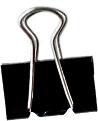

Completa las partes faltantes de este antiguo manuscrito, utilizando tus conocimientos sobre las teorías del origen de la vida. Asegúrate de que tu texto sea coherente y preciso.
El viaje cósmico de la vida
Los primeros pasos
de
la vida terrestre
Lee el siguiente caso y diseña un plan de dieta. Justifica tus elecciones de alimentos basándote en el contenido y la función de las biomoléculas.

INFORME DE CONSULTORÍA NUTRICIONAL
Paciente: Sofía, 20 años
Fecha: 25 de julio de 2025
1. Análisis de necesidades biomoleculares:
2. Plan de dieta sugerido (ejemplo de un día):
Desayuno (07:00 a. m.):
Almuerzo (01:00 p. m.)
Snack de media tarde (04:30 p. m.):
Cena (08:00 p. m.):
3. Consejos biomoleculares adicionales: